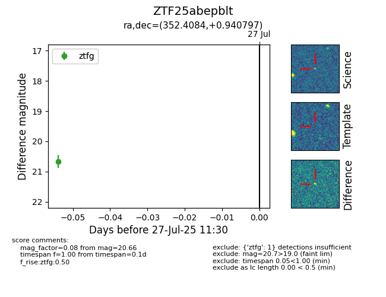

Target ZTF25abepblt at 2025-07-27 11:30, see:
FINK: fink-portal.org/ZTF25abepblt
Lasair: lasair-ztf.lsst.ac.uk/objects/ZTF25abepblt
ALeRCE: alerce.online/object/ZTF25abepblt
alt names
ZTF25abepblt (ztf,fink)
coordinates:
equatorial (ra, dec) = (352.4084,+0.94080)
galactic (l, b) = (84.5961,-55.71987)
photometry
last ztfg=20.66
1 ztfg detections
